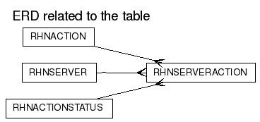

RHNSERVERACTION
DDL scriptColumns
| Name | Type | Nullable | Default value | Comment |
|---|
| SERVER_ID | NUMBER(38) | N | | |
| ACTION_ID | NUMBER(38) | N | | |
| STATUS | NUMBER(38) | N | | |
| RESULT_CODE | NUMBER(38) | Y | | |
| RESULT_MSG | VARCHAR2(1024) | Y | | |
| PICKUP_TIME | DATE | Y | | |
| REMAINING_TRIES | NUMBER(38) | N | (5) | |
| COMPLETION_TIME | DATE | Y | | |
| CREATED | DATE | N | (sysdate) | |
| MODIFIED | DATE | N | (sysdate) | |
Foreign Keys:
Unique Keys:
Options:
| Option | Settings |
|---|
| Tablespace | DATA_TBS |
| Index Organized | No |
| Generated by Oracle | No |
| Clustered | No |
| Nested | No |
| Temporary | No |
Indexes:
Referenced by:
Triggers
RHN_SERVER_ACTION_MOD_TRIG
Legend: string keyword reserved word operator
CREATE TRIGGER
rhn_server_action_mod_trig
before insert or update on rhnServerAction
for each row
REFERENCING NEW AS NEW OLD AS OLD
declare
handle_status number;
begin
:new.modified := sysdate;
handle_status := 0;
if updating then
if :new.status != :old.status then
handle_status := 1;
end if;
else
handle_status := 1;
end if;
if handle_status = 1 then
if :new.status = 1 then
:new.pickup_time := sysdate;
elsif :new.status = 2 then
:new.completion_time := sysdate;
end if;
end if;
end;